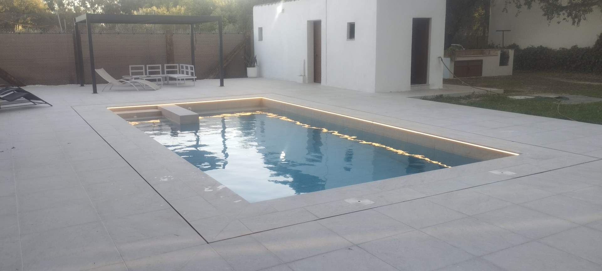
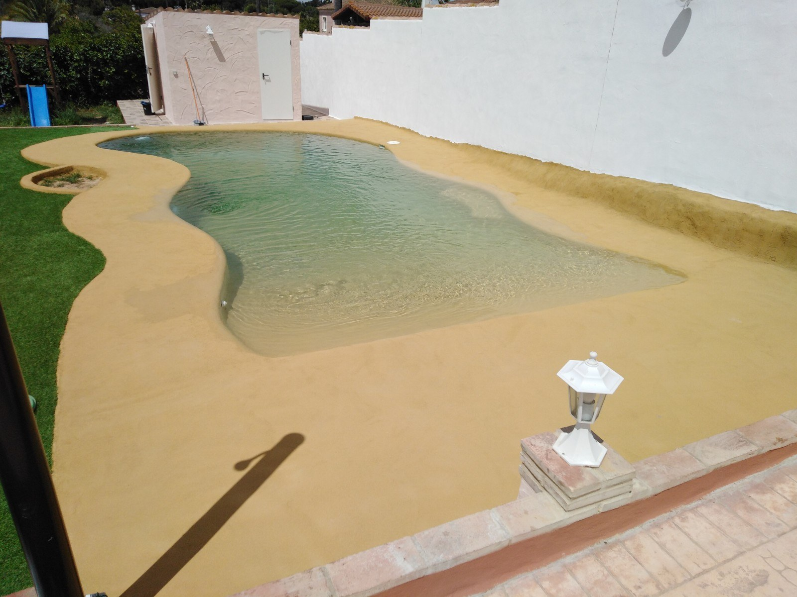
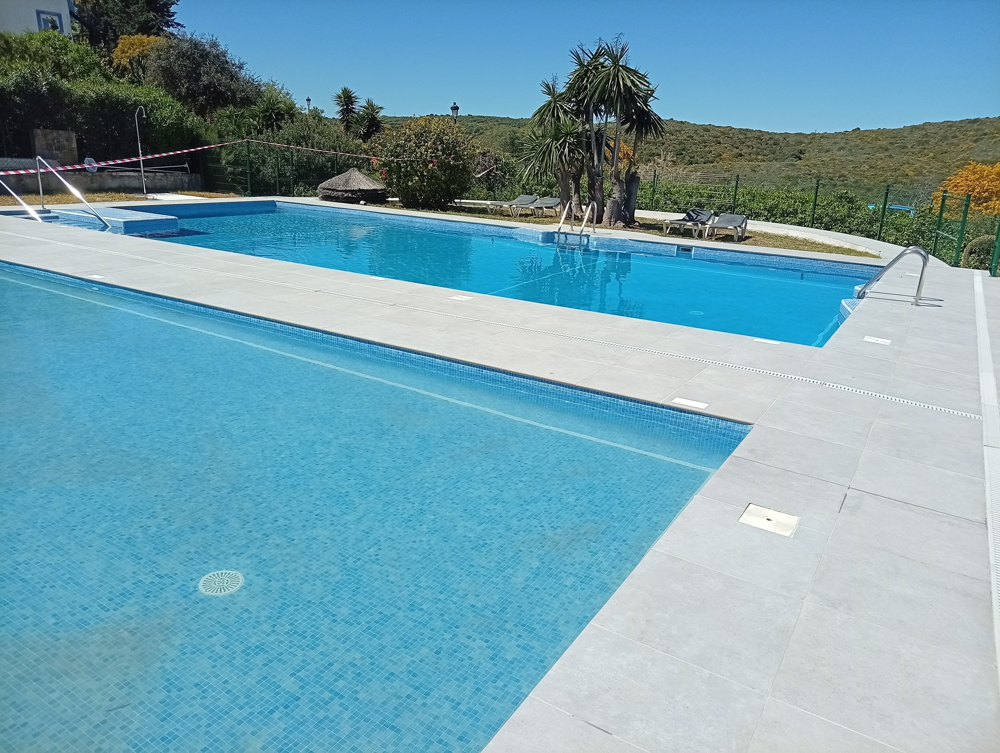
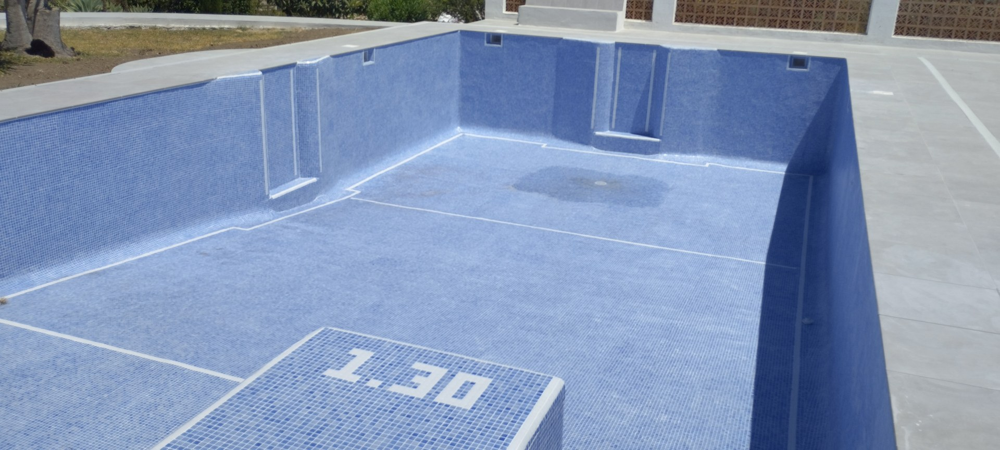

Empieza a imaginarla.
Definimos el vaso, la profundidad, las escaleras y el entorno a partir de tu espacio. Integramos la coronación, los revestimientos y las instalaciones en una propuesta de obra.
Solicitar presupuesto de construcciónARCOS DE LA FRONTERA · CÁDIZ
Construimos y reformamos la piscina que dará una nueva vida a tu hogar.
Hablemos de tu piscinaCuéntanos tu idea. Empezamos por escucharte.
TU CASA. TU PISCINA.
Un baño al terminar el día. Las tardes en familia. Ese rincón que siempre has imaginado.
En OCM POOL nos dedicamos a la construcción y reforma de piscinas en Arcos de la Frontera y la provincia de Cádiz. Hablemos de tu espacio y de la piscina que quieres construir.
Cuéntanos tu proyectoDE LA IDEA AL PRIMER BAÑO
Definimos el vaso, la profundidad, las escaleras y el entorno a partir de tu espacio. Integramos la coronación, los revestimientos y las instalaciones en una propuesta de obra.
Solicitar presupuesto de construcciónValoramos el estado de tu piscina para renovar el vaso, los acabados o las instalaciones. También estudiamos cambios en escaleras, accesos y zonas de descanso.
Consultar una reformaENCUENTRA TU ESTILO
Cuatro formas de relacionar el agua con tu jardín.
El nivel del agua queda por debajo de la coronación. Los skimmers recogen el agua de superficie para llevarla a la depuración.
El agua alcanza el borde y se recoge en un canal. Su diseño requiere prever el depósito de compensación y el circuito hidráulico.
Un borde de desbordamiento crea continuidad visual con el paisaje. Estudiamos la orientación y las cotas del terreno para conseguir ese efecto.
Una entrada progresiva y formas suaves crean un ambiente natural. Adaptamos las pendientes y el acabado al uso previsto.



EL DETALLE CAMBIA TODO
Color, textura y tacto para darle personalidad a tu piscina.

Pequeñas teselas que se adaptan a curvas, escaleras y bancos. Una amplia variedad de colores para definir el tono del agua.
Piezas para el vaso, la coronación y el andén. Elegimos el acabado antideslizante adecuado en las zonas de paso.
Revestimientos continuos de aspecto natural, con sistemas específicos para inmersión y una preparación del soporte acorde al producto.
Acabados continuos para propuestas concretas, seleccionando sistemas compatibles con piscinas y con el estado del vaso.
DISFRUTAR TAMBIÉN ES CUIDAR
Estudiamos la bomba, el filtro y el circuito según el volumen y el uso de la piscina, con acceso para su mantenimiento.
Un equipo que genera cloro a partir de la sal disuelta. Te explicamos los controles y cuidados que sigue necesitando el agua.
Luz para disfrutar del espacio al caer la tarde. Integramos los puntos de iluminación y sus canalizaciones en la obra.
PISCINAS · ARENA · JACUZZIS
Descubre nuestros trabajos de piscinas y construcción. Consulta también proyectos de piscinas de arena y jacuzzis.
Nueva construcción y renovación de vasos, escaleras y exteriores.
Ver trabajos de piscinasFormas suaves y acabados naturales para integrar el agua en el jardín.
Consultar piscinas de arenaBancos, hidromasaje y zonas de descanso adaptados al espacio.
Consultar jacuzzisResultados y proceso de obra: descubre nuestros trabajos y pulsa una fotografía para verla ampliada.
OCM POOL · CERCA DE TI
Construcción y reformas, con especial atención a las piscinas y a sus exteriores.
Trabajamos desde Arcos de la Frontera. Escuchamos lo que necesitas, estudiamos el espacio y detallamos el alcance de la obra para que sepas qué incluye tu presupuesto.
Desde el vaso hasta el andén, te ayudamos a elegir soluciones que encajen con tu casa y tu forma de disfrutarla.
ANTES DE EMPEZAR
Sí. Primero revisamos el vaso, los revestimientos y las instalaciones para definir los trabajos necesarios y las opciones de renovación.
En una piscina de skimmer, el agua queda por debajo de la coronación. En una desbordante alcanza el borde y pasa a un canal de recogida, con depósito de compensación.
Hay que estudiar el terreno, la orientación y el espacio para la recogida de agua. El efecto visual depende de la relación entre el borde y el paisaje.
Se puede estudiar tras revisar el soporte. La elección depende del estado del vaso y de la compatibilidad del sistema de revestimiento.
No. Sigue siendo necesario controlar el desinfectante y el pH, limpiar la piscina y mantener el filtro y el equipo.
La localidad, medidas aproximadas, fotos del espacio y una descripción de lo que quieres hacer. Con esa información valoramos si hace falta una visita.
TU PRÓXIMO VERANO EMPIEZA AQUÍ
¿Construcción, reforma o un nuevo acabado?
Envíanos la ubicación, unas fotografías y las medidas aproximadas. Empezamos por escuchar tu idea.
Solicitar presupuesto por WhatsAppCERCA DE TI
Arcos · Cádiz · Jerez · El Puerto de Santa María · Chiclana · San Fernando · Puerto Real · Rota · Conil.